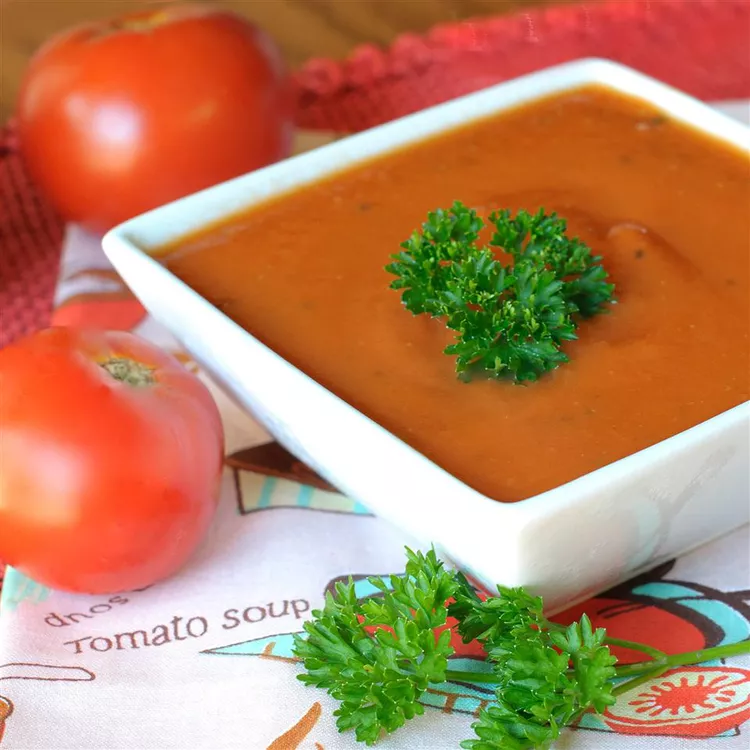

Fresh Tomato Soup

Description
This tomato soup recipe is simple, quick, and perfect to make when tomatoes are ripe in gardens and farmers' markets for a delicious summertime treat.
Delicious with garlic bread or a grilled cheese sandwich. Prep time is 5 minutes and cooking time is 30 minutes.
Ingredients
- Tomatoes: This recipes starts with fresh tomatoes for good reason. It makes the best tomato soup.
- Chicken broth: Using broth will help make this more of a soup and less like a sauce.
- Garlic: The recipe calls for about four cloves, but feel free to use however much your heart desires.
- Onion: A yellow or white onion would be ideal for this soup.
- Butter: Use butter to make a roux, a thickening agent made from flour and fat.
- Flour: Use all-purpose flour to make your roux.
- Sugar and Salt: Add these two seasonings until the soup suites your tastebuds.
Steps
- Boil the tomatoes, onion, garlic, and broth.
- Run the mixture through a food mill into a large bowl.
- Make a roux.
- Add the tomato mixture and season.